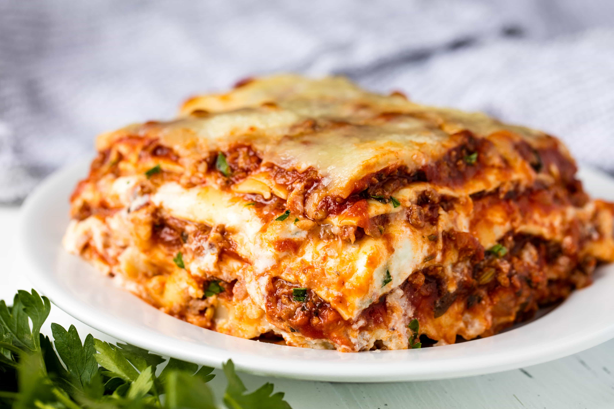

Lasagna

Ingredients
Mince Sause
- Mince
- Onion
- Garlic
- Crushed Tomatoes
- Tomato Pure
Bechamelle Sause
- Butter
- Flour
- Milk
- Grated Cheese
- Salt and Pepper
Assembling
Lasanga Plates
Description
Mince Sause
- Chop the onions
- Grate or crush garlic
- Fry mince in hot pan until nice color
- Add onions and Garlic and fry a bit more
- Add tomato Paste and let fry for 1 minute
- Add Chopped Tomatoes and season with salt and pepper
Bechamelle Sause
- Melt Butter in a pan
- Add flour
- Mix and let fry for a minute
- Add milk and heat while stiring until thickend
- Add grated cheese and season with salt and pepper
Assemble
- Turn on the oven fan forced
- Layer Lasanga in a oven dish. Start with Bechamelle, then Mince and then Lasanga Plates, repeat for as many layers as you would like.
- Put in oven until done